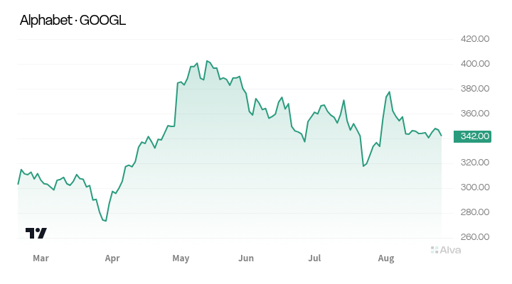

GOOGL
AMD is approaching its summer high as more buyers join the advance.
The stock has broken higher after its last pullback stopped above the previous low. Rising trading volume makes the recovery more convincing. [1]

AMD is approaching its summer high as more buyers join the advance.
The stock has broken higher after its last pullback stopped above the previous low. Rising trading volume makes the recovery more convincing. [1]
